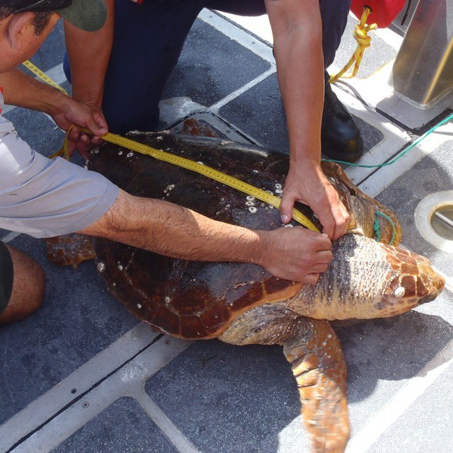

Turtle Conservation
Home
About
Organisations
Help Out
Rescuing Sea Turtles

Image from wikimedia commons
A sea turtle being rescued
Volunteers cleaning up a beach
Image from unsplash
Plastic Rubbish in the ocean
Image from unsplash
text text text text